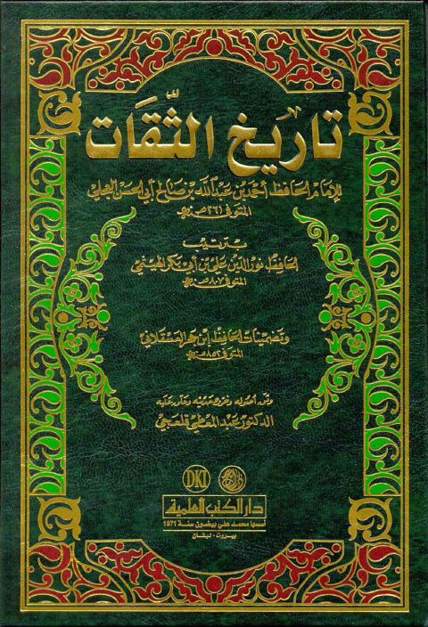

تاريخ الثقات للعجلي
Authors: أحمد بن علي بن حجر العسقلاني ، نور الدين علي بن أبي بكر الهيثمي
Editors: عبد المعطي قلعجي
Publishers: دار الكتب العلمية
Download Downloads need an internet connection.
- Published
- 1405هـ 1984م
- Country
- بيروت، لبنان
- Edition
- 1
- Volumes
- 1
- Pages
- 552
- Type
- كتاب
- Category
- الحديث وعلومه
- Subcategory
- تراجم
Description
**▫️ العنوان: تاريخ الثقات للعجلي** ▪️ المؤلف: #نور_الدين_علي_بن_أبي_بكر_الهيثمي • #أحمد_بن_علي_بن_حجر_العسقلاني ▫️ المحقق: #عبد_المعطي_قلعجي ▪️ الناشر: #دار_الكتب_العلمية ▫️ تاريخ النشر: 1405هـ 1984م ▪️ بلد النشر: بيروت، #لبنان ▫️ الطبعة: 1 ▪️ عدد الأجزاء: 1 ▫️ الصفحات: 552 ▪️ نوع الوعاء: #كتاب ▫️ التصنيف الرئيسي: #الحديث_وعلومه ▪️ التصنيف الفرعي: #تراجم ۪